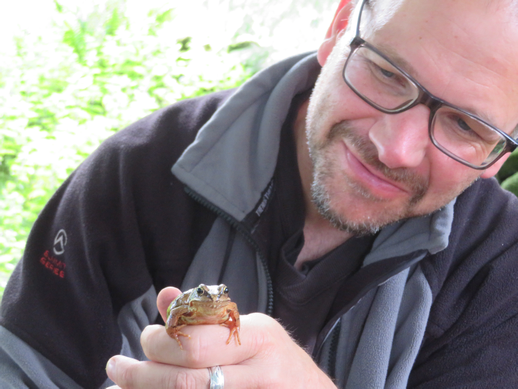
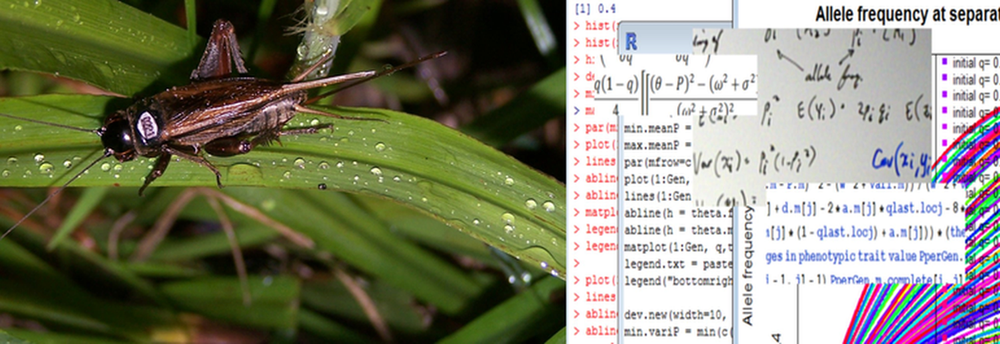
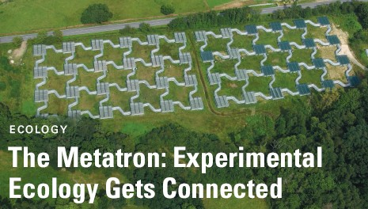

Research
Research Interests and Summary

My research primarily revolves around evolutionary ecology, with a strong emphasis on ageing processes, life-history trade-offs, and the influences of environmental factors such as nutrition and developmental conditions on fitness and senescence, in the lab and in the wild. I explore how these elements interact to shape reproductive performance, longevity, and population dynamics across various model and non-model organisms, including fruit flies, crickets, seed beetles, zebrafish, and lizards. A recurring theme in my work is the investigation of adaptive responses to stressors like dietary restriction, which can lead to longer lifespans.
A significant portion of my research delves into sex-specific effects, particularly sexual dimorphism in trait variability and nutrient-dependent reproductive ageing. My findings reveal that males and females often exhibit divergent patterns in how traits evolve and also senesce, influenced by diet and sexual selection pressures. In crickets, for example, female fecundity peaks early and declines, while male sexual advertisement increases throughout life, demonstrating that sexual selection can counterbalance age-related declines. Similarly, in meta-analyses on a massive mouse data set, I have found that trait variability shows sex biases, with males varying more in morphological traits, while females do in immunological ones. These results have implications for eco-evolutionary dynamics like responses to climate change and statistical considerations in research design.
I also examine the interplay between developmental and adult environments on ageing and (evolutionary) fitness, often finding sex- and trait-specific outcomes. Thermal stress during development, for instance, impairs female reproductive performance in seed beetles, while adult environments more strongly affect lifespan and mortality rates. This underscores the need for integrated studies across life stages to understand senescence fully. Additionally, my work on paternal effects reveals how factors like personality, social status, and sperm competition can influence offspring traits epigenetically, as seen in zebrafish where short-term sperm competition variations affect early offspring performance.

Beyond these core areas, I contribute to understanding population-level responses to environmental changes and experimental methodologies for studying dispersal. My collaborative efforts, such as on the diversity of population reactions to ecological shifts and the development of systems like the Metatron for dispersal studies, broaden the scope to include conservation and meta-population dynamics. Overall, my research bridges evolutionary theory with empirical data, emphasizing the roles of sex, nutrition, and environment in shaping life histories and adaptation.
Key Research Themes
- Evolution of sexual dimorphism
- Intra-locus sexual conflict
- Transgenerational epigenetic inheritance
- Evolution of ageing and senescence
- Sex- and age-specific effects of nutrition (e.g., dietary restriction) on ageing
- Ageing in natural populations
- Biodemography
- Condition-dependent dispersal in metapopulations
Key Projects
- Transgenerational effects of nutrition and stress in fruit flies and stilt-legged flies
- Meta-analytic analysis of sex differences in allometry
- Population and quantitative genetic models for life-history evolution
- Experimental work on age-dependent sexual conflict in fruit flies and rainbow skinks
- Sexual conflict via antagonistic alleles in Drosophila
- Diet effects on life history and aging in Drosophila
- Integration of lab and field studies in invertebrates
- Maintenance of color polymorphism in European wall lizards
- Dispersal strategies in Common Lizards using the Metatron facility
